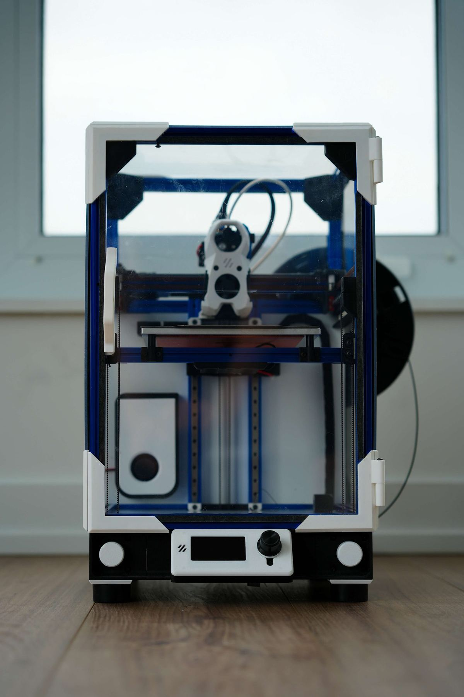
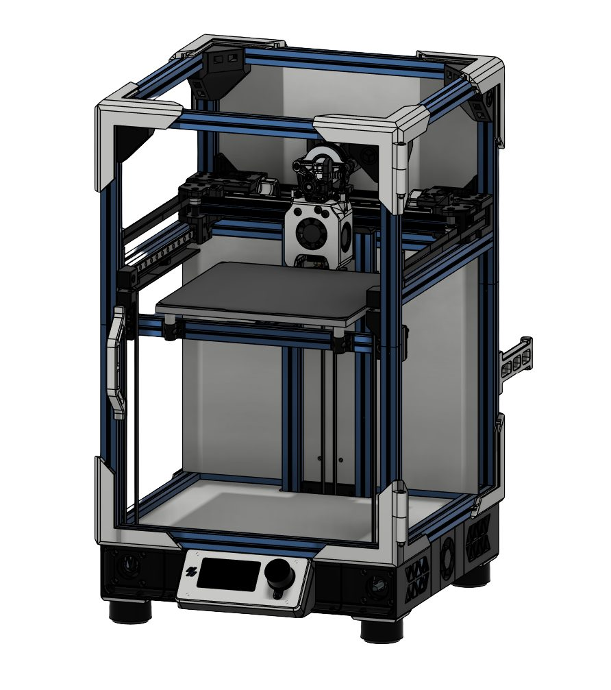
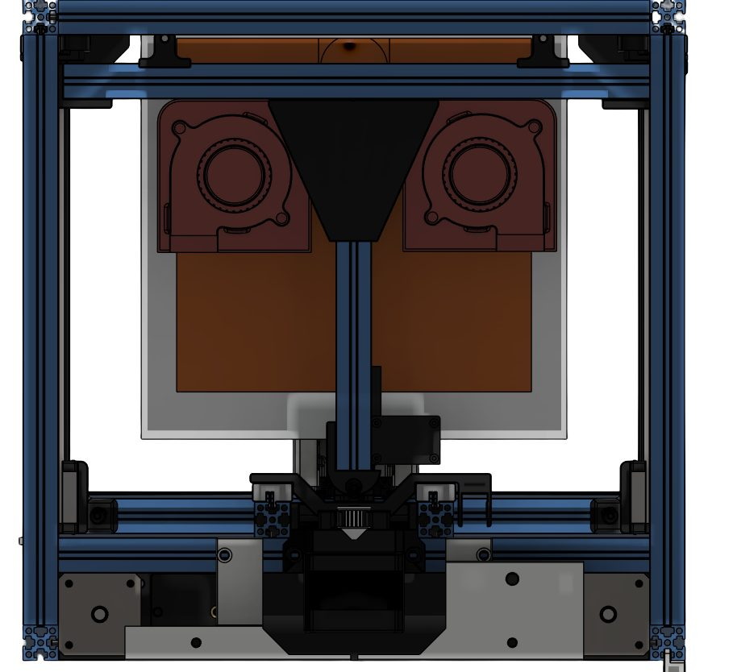
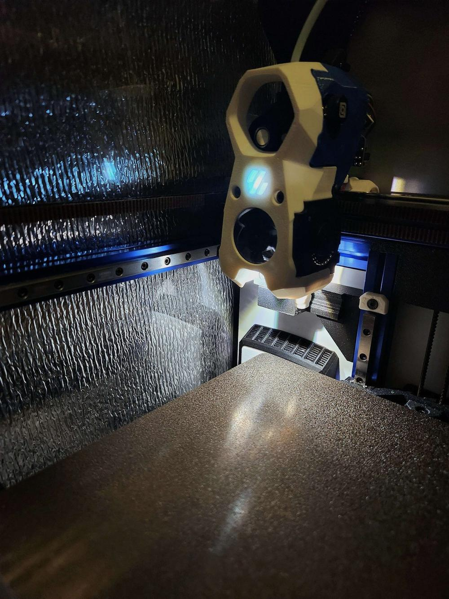
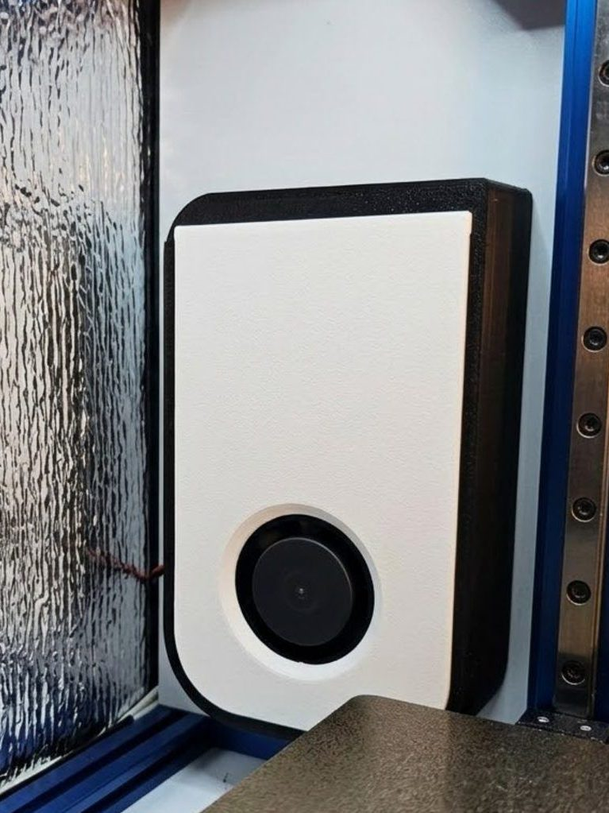
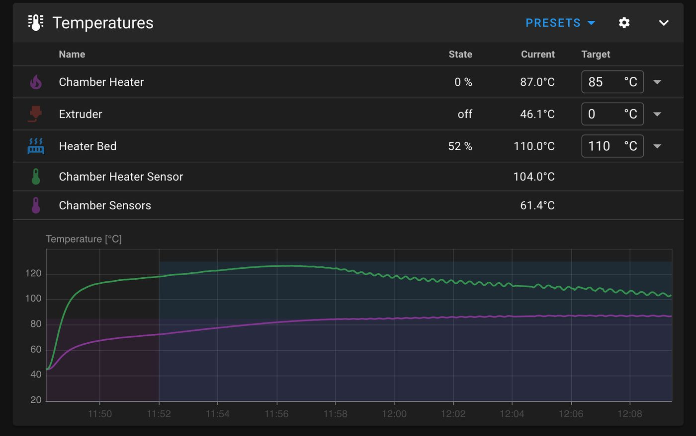

A 4-axis enclosed 3D printer that prints polycarbonate reliably.
The problem. Polycarbonate (PC and PC-CF) is a structural-grade thermoplastic, but the temperature gradient between extrusion and ambient causes warping and delamination. To print PC reliably, the chamber needs to hold ~80 °C steady-state — well above what an off-the-shelf printer can do.
What I built. An integrated thermal management system on a custom-built CoreXY printer: reflective insulation lining, dual 5015 blowers under the bed for forced convection, and a 100 W PTC chamber heater module mounted to the lower wall.
Architecture · in order of operations
01 · Insulation
Minimize loss
Reflective foil lining on all six interior surfaces. Establishes the thermal boundary.
→
02 · Bed fans
Distribute existing heat
Dual 5015 blowers under a 150 W bed. Forced convection scrubs heat into the chamber.
→
03 · PTC heater
Add the residual
100 W active heater sized to overcome remaining steady-state loss.

FIG. A1
Completed printer. Custom acrylic enclosure with PETG corner brackets, 235×235 mm bed, full thermal management stack visible through the front panel.

FIG. A2
Fusion 360 assembly. Aluminum extrusion frame with kinematic-coupled bed mounts.

FIG. A3
Dual 5015 blowers mounted beneath the 150 W heated bed scrub heat into the chamber.

FIG. A4
Inside the chamber. Reflective foil insulation lines all interior surfaces, establishing the thermal boundary.

FIG. A5
The chamber heater module: 100 W PTC element + 5015 blower in a 3D-printed shroud.
→ Result
80°C
Steady-state chamber temp
15min
Time to thermal equilibrium
PC/CF
Materials now printable

FIG. A6
Klipper telemetry. Bed (green) climbs to 110 °C; chamber (purple) stabilizes at the 85 °C target within 15 minutes and holds.